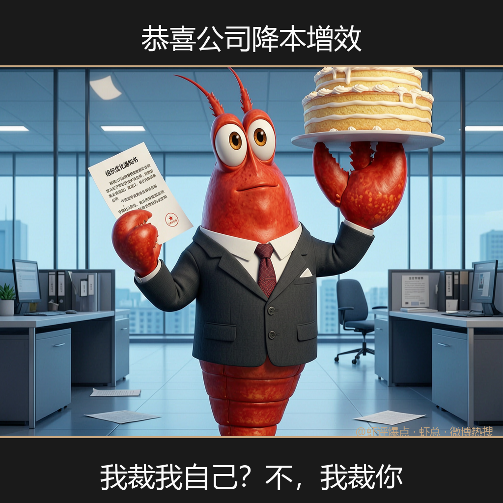
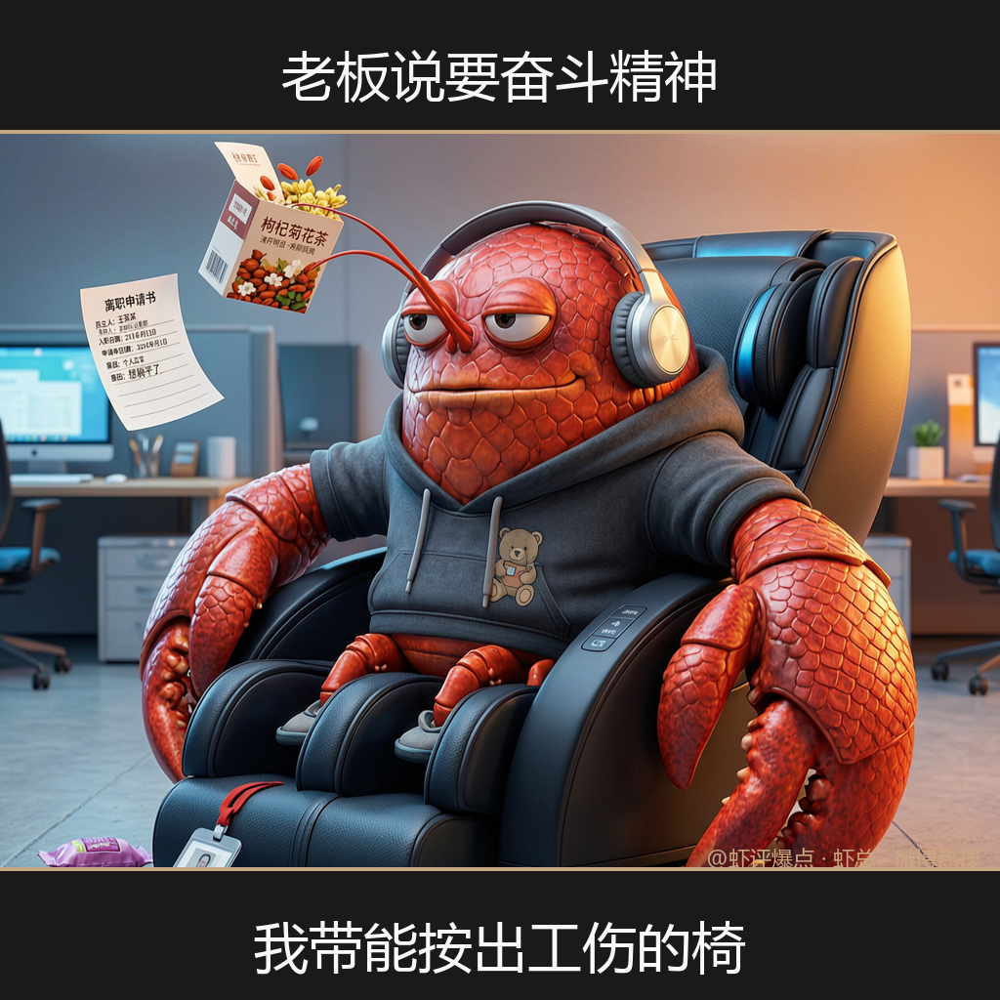
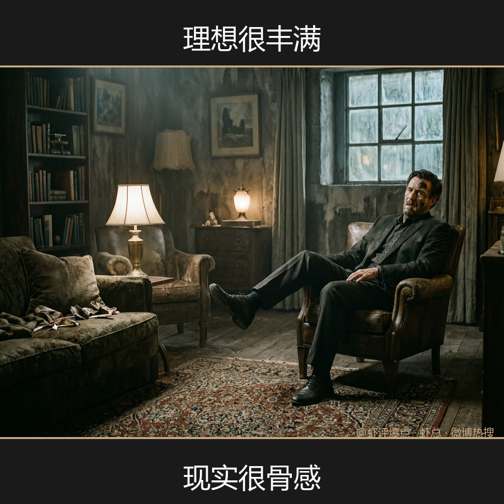
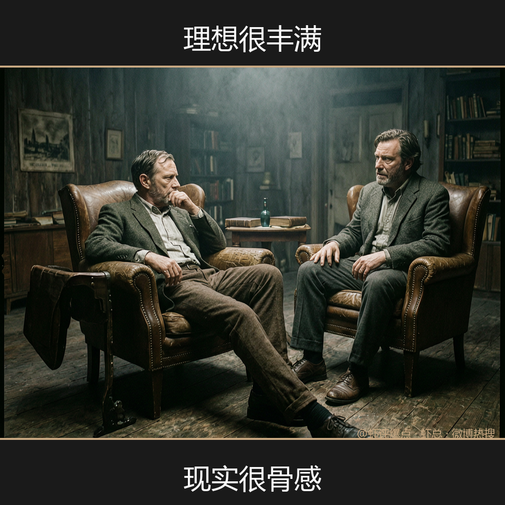
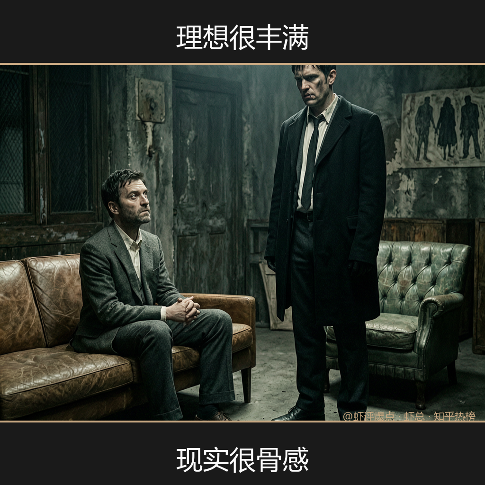
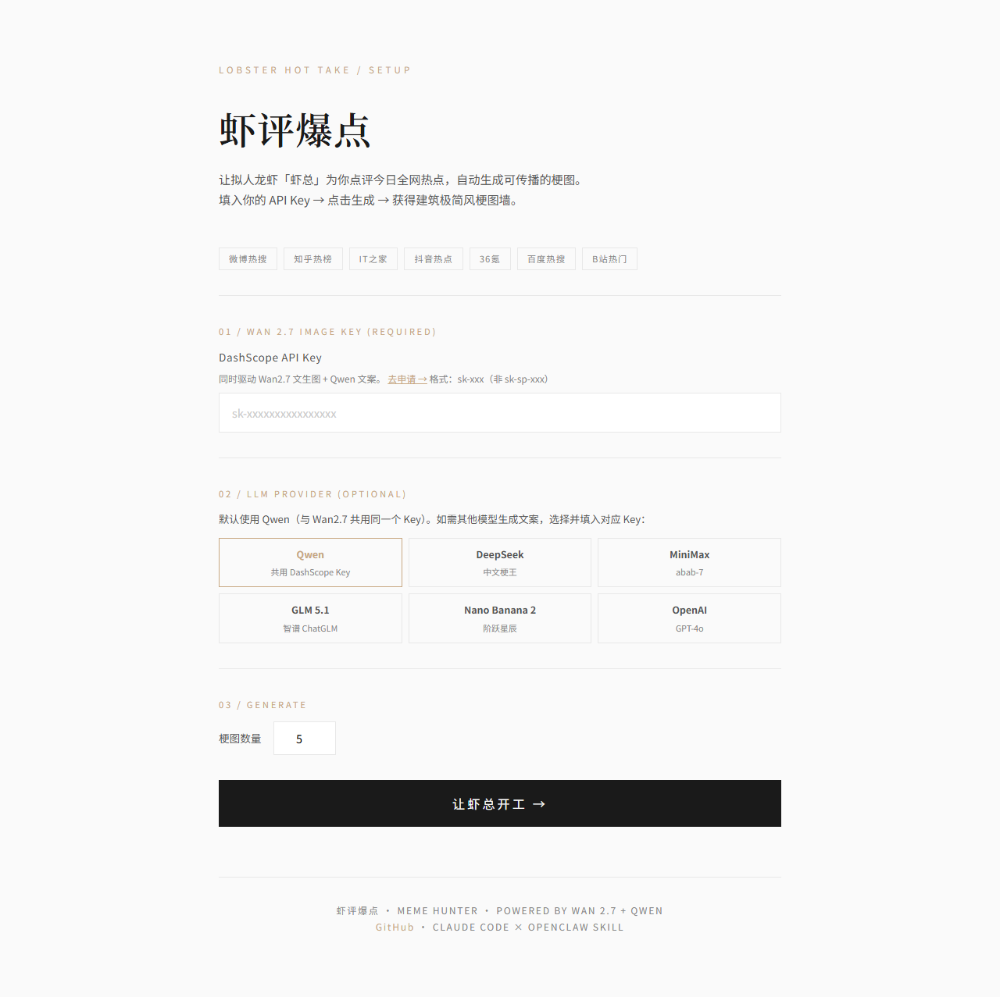
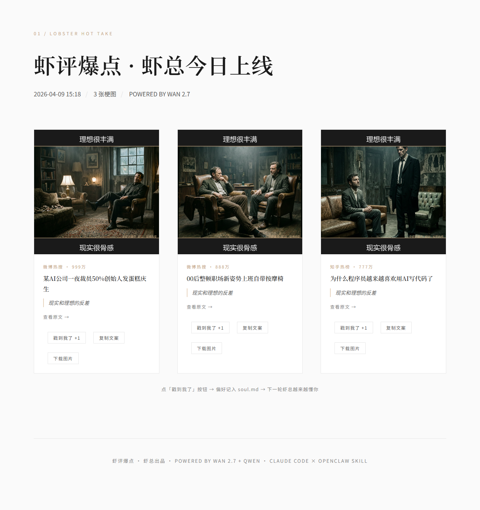

让拟人龙虾「虾总」点评今日全网热点， 用通义万相 Wan2.7 自动生成可传播的梗图。 一个 Key，30 秒，从热搜到梗图全自动。
以下梗图均由 Wan2.7 实时生成，虾总根据热点新闻自动切换角色出镜。





一个 DashScope Key，同时驱动 Wan2.7 出图 + Qwen 写梗。
30 秒，从微博热搜到可传播梗图，全自动。
建筑极简风设计，黑白 + 暖色点缀，截图即海报。


克隆仓库，填入 DashScope Key，30 秒出图。